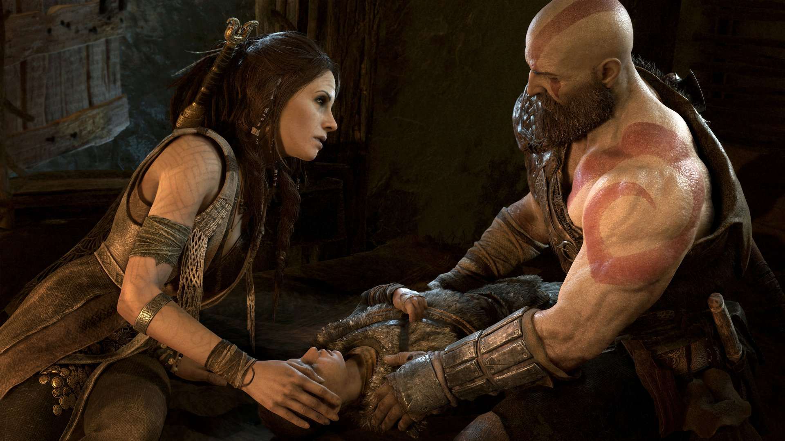
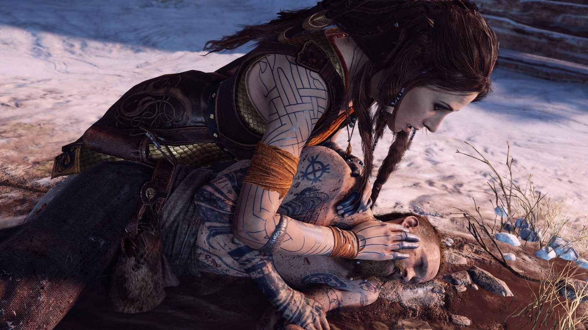

Freya

Está implícito que Freya vive uma vida semelhante a de Kratos. Ela diz que vê muito de si mesma nele e, ao ajudá-lo, ela espera expiar seus erros.
Sob o pseudônimo de Bruxa da Floresta, Freya encontra Kratos e Atreus pela primeira vez em um incidente onde um javali que ela estava protegendo é alvejado e ferido por Atreus. Kratos e Atreus concordam em ajudar a curar o javali e são levados de volta para sua casa. Ela gosta imediatamente de Atreus e torna-se sua amiga. Kratos, no entanto, é cauteloso com Freya, especialmente depois de ser revelado que ela é uma deusa. Quando Atreus está no pátio da casa reunindo materiais para o processo de cura, Freya revela a Kratos que ela sabe que ele é um deus estrangeiro e o avisa que os deuses nórdicos não tolerarão sua presença em seus reinos. Ela continua expressando suas preocupações com Atreus e o fato de que Kratos o mantém ignorante de sua verdadeira natureza, mas Kratos afirma severamente que isso não é da conta dela.
Depois que o javali é curado, Freya agradece Kratos e Atreus, colocando neles marcas que os protegerão dos deuses nórdicos. Antes de partirem, Atreus pergunta a Freya se eles se encontrarão novamente, ao que ela sorri e gentilmente responde: "Isso depende da vontade de vocês.".
Freya alcança Kratos e Atreus quando eles começam a escalar a montanha, oferecendo-se para ajudá-los a superar o obstáculo a frente dos dois. Ela os leva ao Templo de Tyr, explicando o seu propósito e como superar os obstáculos. Ela mostra a Kratos como usar a Bifröst e ensina ele a fazer uma passagem para Alfheim. No entanto, ela é incapaz de prosseguir pois a maldição que Odin colocou nela rapidamente a arrasta de volta para Midgard.
Freya é vista mais uma vez quando Kratos traz a cabeça decepada de Mímir para ela ressuscitar, o que a choca. Antes de ressuscitar Mímir, ela percebe que Atreus está equipado com flechas de visco. Sabendo que o visco é a única coisa que pode matar seu filho, ela rapidamente substitui as flechas de Atreus com as suas e destrói as de visco. Após o renascimento de Mimir, imediatamente se torna aparente para Kratos que Freya não gosta muito de Mímir, e Mimir acidentalmente revela a identidade de Freya para Kratos e Atreus. Isso aprofunda a desconfiança de Kratos em relação a Freya.

No entanto, Kratos é forçado a procurar a ajuda de Freya quando Atreus adoece após uma batalha com Magni e Modi. Freya é, inicialmente, relutante em ajudar Kratos devido ao seu ódio aberto por seres divinos e só concorda em ajudar quando ela percebe a situação de Atreus. Ela repreende Kratos por manter Atreus ignorante de sua herança divina, pois a atual situação de Atreus foi resultado do conflito entre a natureza divina de Atreus e sua crença de que ele é um simples mortal. Ela diz a Kratos que ela precisa de um ingrediente raro de Helheim para curar Atreus e que Kratos precisaria de uma arma não-gélida para combater as feras que vivem naquele reino.
Depois de recuperar o ingrediente, Kratos o traz para Freya, que o utiliza para criar um remédio para Atreus. Freya, então, diz a Kratos que ela também tem um filho e que, no dia de seu nascimento, as runas previram sua morte e ela jurou fazer qualquer coisa para protegê-lo, não importando o sacrifício. Ela lamenta suas decisões, que levaram ao ressentimento de seu filho e implora a Kratos para evitar cometer o mesmo erro e ter fé em seu filho. Neste ponto, Freya começa simpatizar com Kratos, enquanto o Fantasma de Esparta, hesitantemente, começa a diminuir suas suspeitas em relação a ela.
Depois que Kratos e Atreus acabam no reino de Helheim após outro encontro com Baldur, Kratos e Atreus assistem a uma ilusão na frente de Baldur. Eles aprendem que Freya é a mãe de Baldur, a quem ele despreza devido ao feitiço que ela lançou sobre ele, que tirou sua habilidade de sentir qualquer coisa.
Pouco antes do encontro final com Baldur, Freya aparece diante de um cauteloso Kratos e Atreus para procurar Baldur, alegando que os campos e bosques falam seu nome, levando-a a acreditar que ele está em Midgard. Ela percebe que Kratos e Atreus estão mais distantes dela, mas antes que ela pudesse descobrir o motivo, Baldur aparece. Freya está feliz em ver Baldur e tenta alcançá-lo e remediar seu sofrimento, mas é recebida com desprezo. Baldur tenta matar Freya, mas Kratos intervém e logo a situação vira uma briga. Quando Atreus fica diante de Kratos para protegê-lo, Baldur o acerta no peito, inadvertidamente fazendo com que a flecha do visco que estava amarrada na aljava de Atreus corte seu punho, o que, para desgosto de Freya, quebra o feitiço de invulnerabilidade dele.
Com Baldur vulnerável mais uma vez, Freya, desesperada, usa sua magia para reviver o cadáver do gigante de gelo Thamur para tentar separar Kratos e Atreus de Baldur, implorando para que eles fiquem fora do assunto. Quando Kratos responde dizendo que não há como discutir com Baldur e que ele quer matá-la, ela diz que não se importa e que irá protegê-lo a todo custo. Baldur logo reaparece e a batalha continua. Ao longo da luta, Freya implora para que eles parem de lutar, acreditando que ela ainda pode discutir com Baldur. Depois que a batalha termina, ela implora a Kratos para não machucar Baldur, ao que Kratos concorda.
Baldur continua a repreender Freya, condenando-a por sempre interferir em sua vida. Freya admite que estava errada e tenta ajudar Baldur a encontrar, em si mesmo, força para desistir de seu ressentimento, esperando consertar o relacionamento deles, mas Baldur se recusa a perdoá-la. Freya finalmente desiste de tentar argumentar com Baldur e decide deixá-lo matá-la, já que é a única coisa que lhe traria paz. Enquanto Baldur a estrangula, ela diz a ele que o ama. No entanto, antes que Baldur pudesse matá-la, Kratos o agarra por trás e quebra seu pescoço.
Freya, com o rosto manchado de lágrimas e lívida pela morte desnecessária do filho, jura horrível vingança contra Kratos. Ela repreende-o e insulta-o sobre o seu passado que ele ainda há de revelar ao seu filho. Isso leva Kratos a finalmente revelar seu passado violento para Atreus. Ela é vista pela última vez carregando o corpo sem vida de Baldur para fora do enquadramento, enquanto Kratos e Atreus partem para terminar sua jornada.

Depois que Kratos e Atreus retornam de Jötunheim, Mímir diz a eles que passou-se mais tempo do que eles pensavam e, durante aquele tempo, Freya veio visitar Mímir e perguntou onde Odin mantinha as asas de valquíria de Freya. Mímir disse a ela o pouco que ele sabia disso. Ao que ele diz: "O ciclo da vingança não é quebrado tão facilmente".